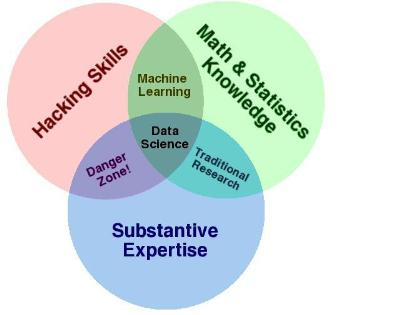

2013-08-08 · Lester Martin
Are you asking yourself what is a data scientist? If so, check out IBM's definition which isn't too bad. What am I saying – it sounds awesome! It's the next great tech-oriented "artist" role out there – what's not cool about that?
When I was taking Cloudera's Hadoop Administration course (BTW, did I brag mention that I have obtained BOTH the CCDH and the CCAH credentials and point you to my shiny Professional Certifications?) the instructor turned me on to kaggle and the competitions they run for those calling themselves Data Scientists. Some are for ca$h and some are for fun. Pretty interesting stuff.
So, am I ready to jump in? Well... maybe not, but I would be willing to be part of a team that did if anyone is looking to learn together, or if brilliant data scientist wants to take me under their proverbial wing. Ping me if you fit into one of these categories and definitely let me know if you have participated in one of these competitions as I'd love to hear about it.
